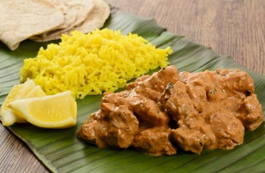

Cabri Massale

Description
The Cabri Massalé is the most representative dish of Tamil ”Malabar” cuisine on Reunion Island.
Ingredients
1,5kg of Cabri
4 onions
2 cloves garlic
1 large can of crushed tomatoes
1 tablespoon of tamarind paste
1 half inch of ginger
2 teaspoons of turmeric
3 teaspoons of massalé
3 teaspoons of coarse salt
Steps
Start by pouring 5 dl of water into a bowl and add the tamarind to dilute.
Cut the meat into small pieces. Chop the onions and mash the garlic, coarse salt and ginger.
Pour a drizzle of oil into a pot and put the meat to cook.
When the meat becomes well colored, add the onions and leave for about 2 minutes until the onions are colored.
Add the garlic, and cook for about 3 minutes.
Add the tomato and let return for 5 min.
Add the massalé and turmeric.
Cover the meat with water and simmer over low heat for about 1 hour.
Add the tamarind after an hour of cooking the goat massale, mix and cook for 10 minutes. Serve hot with white rice and a “good” Larson broth.
Homepage